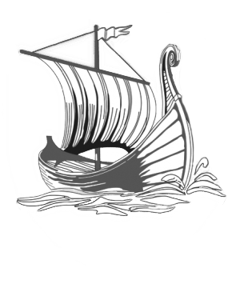

Историко-краеведческий музей
Государственное учреждение культуры "Жлобинский историко-краеведческий музей" было открыто в 1987 году после реорганизации. Экспозиция музея основана на истории города и района и играет роль научного, культурно-просветительского и методического центра.
В музее есть 16 экспозиционных залов, включающих археологию, этнографию, развитие железной дороги, революцию, Великую Отечественную войну, религию, детский зал и другие тематические залы. Также в музее есть картинная галерея, выставочный зал, музыкальный салон и лекционный зал.
В экспозиции представлены археологические находки, макет Жлобинского замка и реконструкция захоронения бронзового века. В музее можно увидеть представление флоры и фауны Жлобинщины, сруб крестьянской избы ХIХ века. Музей представляет историю железнодорожного транспорта, революции и создания города Жлобина, с помощью документов, фотографий, предметов и медалей, связанных с Великой Отечественной войной.
В музее рассказывается об истории образования, здравоохранения, спорта и знаменитых людях района. В зале религии можно увидеть православные кресты и другие предметы, связанные с религией. Для детей есть специальный зал с играми, мультфильмами, занятиями и мастер-классами.
Наш фотоальбом